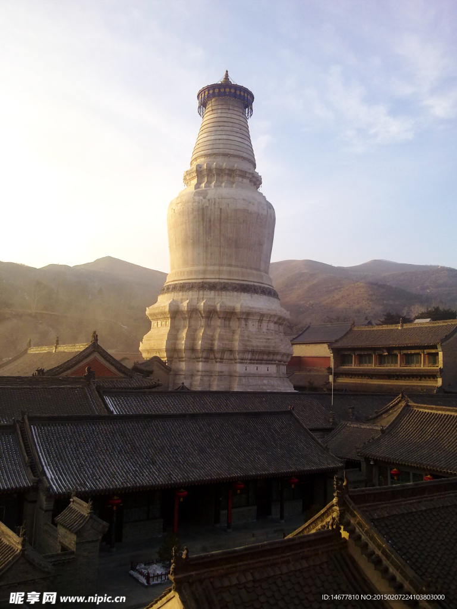

中国现存最完整的唐代木构建筑 · 打破"唐构无存"论断 · 东方建筑美学的巅峰

东大殿正立面 · 唐大中十一年（857年）重建
佛光寺位于山西省忻州市五台县豆村镇佛光山中，始建于北魏，唐武宗会昌五年（845年）"会昌法难"期间遭拆毁，唐宣宗大中十一年（857年）重建，现存的东大殿即为这次重建的建筑，是中国现存规模最大、保存最完整的唐代木构建筑。
1937年，著名建筑学家梁思成、林徽因率团考察时，在梁架上发现了唐代题记，确认此殿建造年代，彻底打破了日本学者"中国境内无唐代木构建筑"的断言，轰动建筑学界。佛光寺东大殿被誉为"中国第一国宝"，是研究唐代建筑不可替代的实物依据。
← 面阔七间（34米）→
↑ 进深四椽（17.66米）↑
东大殿面阔七间（34米），进深四椽（17.66米），单层庑殿顶，是唐代建筑规格最高的形制。殿内供奉35尊唐代彩塑，是现存最大的唐代彩塑群。
东大殿采用四阿（庑殿）顶，是中国古代建筑屋顶等级最高的形制，前后两坡加左右两侧坡共形成五脊四坡。屋面坡度平缓（举高约1/5），屋角微微翘起，整体轮廓舒展大气，呈现出唐代建筑特有的雄浑沉稳之美，与宋以后越来越高翘的风格形成鲜明对比。
东大殿的斗拱用料硕大，外檐斗拱高度约为柱高的1/2，出跳深达四跳（四铺作），使屋檐从墙身向外挑出近4米，是中国现存唐代建筑中斗拱出跳最深的实例之一。这种超深出檐不仅遮挡了雨水，也赋予建筑立面强烈的光影层次，形成典型的唐代建筑美学。
东大殿的檐柱采用"侧脚"做法（柱根略向外偏、柱头向内倾斜）和"生起"做法（角柱比中柱略高），使整体柱列形成向心的收紧感，增强建筑的整体稳定性，同时在视觉上消除了直角柱网产生的视错觉，使建筑看起来更加端正挺拔，这是《营造法式》记载的唐宋木构核心技法。
殿内现存35尊唐代彩塑，是中国现存规模最大的唐代彩塑群，主像为卢舍那佛坐像，两侧分列菩萨、天王、供养人像，比例准确，神态自然，衣褶流畅，体现了盛唐造像艺术的最高水准。殿内梁架上还留存有唐代供养人题记，是确认建造年代的直接证据。
东大殿以"材"（斗拱截面的高度）为基本模数单位，全殿所有构件的尺寸均是"材"的整数倍，实现了模数化标准化设计。这一体系与《营造法式》中记载的"以材为祖"的设计原则完全吻合，证明了该书理论来源于唐代成熟工程实践，同时也使建筑构件可以在施工现场外预制，大幅提高了建造效率。
1937年6月，梁思成与林徽因、莫宗江、纪玉堂在敦煌壁画中发现了描绘五台山佛光寺的图像，随即前往考察。在东大殿的梁架内，他们发现了"女弟子宁公遇"的供养人题记和"唐大中十一年"字样，经与殿内彩塑对比，确认建造年代。这一发现轰动国际学界，彻底终结了日本学者"中国境内已无唐代木构建筑"的论断。
发现经过：
1937年 → 发现敦煌壁画线索 → 赴五台山现场考察 → 发现梁架唐代题记 → 确认857年建造年代 → 向国际学界公布 → 轰动建筑学界
佛光寺东大殿之所以能历经1167年保存至今，与其偏僻的地理位置密切相关。寺庙深藏于五台山豆村镇的山坳中，交通不便，远离战乱核心区；同时当地气候干燥，木材腐朽速度极慢；加之历代僧众的持续维护，才使这座唐代建筑奇迹得以保全。相比之下，绝大多数唐代建筑在历次战乱和"法难"中均遭毁损。
「 这是中国建筑史上的重要发现 」
— 梁思成，1937年考察后语 · 中国第一国宝